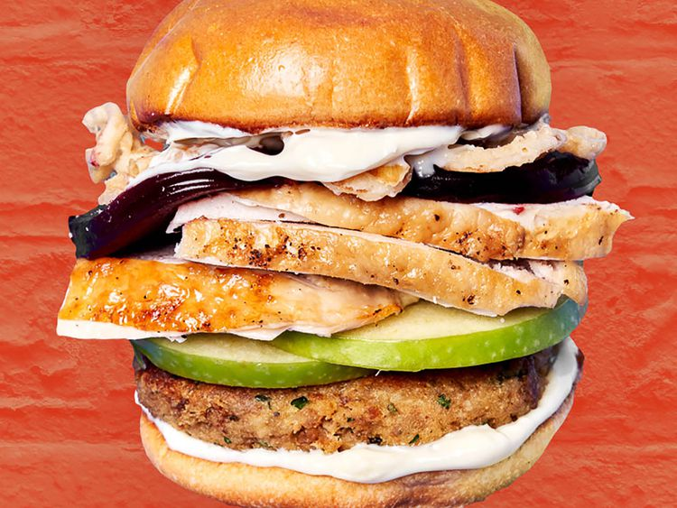

Ultimate Thanksgiving Leftovers Burger

Description
This ultimate Thanksgiving leftover burger is made with turkey, stuffing, gravy, sliced apple, cranberry sauce, and crispy onions. The combination of everything makes for the perfect bite.
Ingredients
- 4 cups leftover cooked stuffing or dressing
- 1/3 cup turkey gravy
- 1 large egg, beaten
- 1 tablespoon chopped fresh herbs, such as parsley, sage or thyme
- 2 tablespoons seasoned breadcrumbs, or more as needed
- 1/4 cup olive oil
- 4 brioche hamburger buns
- 2 tablespoons butter, softened
- 2 teaspoons fresh sage or 1/2 teaspoon dried sage
- 3 tablespoons mayonnaise, divided
- 3/4 lb leftover roasted turkey breast, sliced
- 1 large green apple, cored and thinly sliced
- 4 slices (1/4 -1/2 inch thick) jellied canned cranberry sauce
- 1/2 cup crispy fried onions, such as French’s crispy fried onions
Steps
- Crumble leftover stuffing into a bowl. Add gravy, egg, and herbs and mix to combine. Add breadcrumbs and mix well. If stuffing mixture is too moist, add up to 2 additional tablespoons of breadcrumbs as needed to hold together. Form stuffing mixture into 4 patties, pressing to hold the mixture together tightly.
- Heat oil in a large, nonstick skillet over medium-high heat. Place patties into the hot oil and cook, undisturbed, until until golden brown, about 2 minutes.Flip over and cook, flipping as necessary, until golden and toasted all over and hot throughout, 3 to 5 more minutes.
- Combine softened butter with sage and spread evenly over both sides of each bun. Heat another large skillet over medium heat and place buns, buttered side down, in the skillet. Cook until toasted and golden brown, about 1 minute.
- Spread a thin layer of mayonnaise over each toasted bun half. Place stuffing patty on the bottom half of each bun. Top with sliced apple, sliced turkey, and cranberry. Divide onions over each burger and top with remaining bun tops.